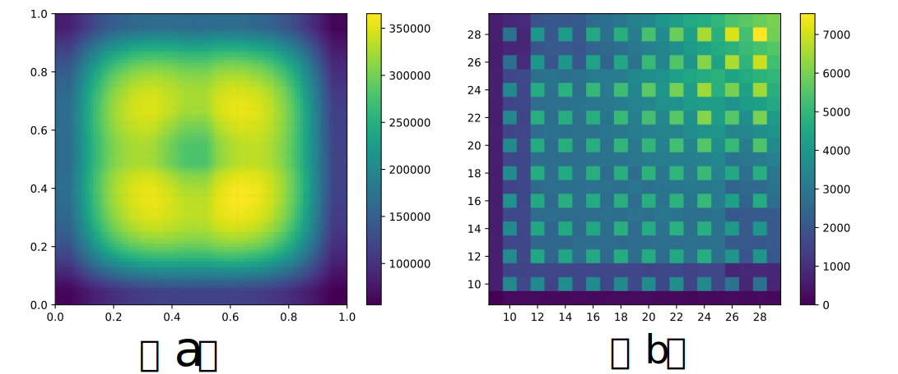

<!DOCTYPE html>
<html>

<head>
<!-- Google tag (gtag.js) -->
<script async src="https://www.googletagmanager.com/gtag/js?id=G-47WTV4E2V1"></script>
<script>
  window.dataLayer = window.dataLayer || [];
  function gtag(){dataLayer.push(arguments);}
  gtag('js', new Date());

  gtag('config', 'G-47WTV4E2V1');
</script>
    <meta http-equiv="Content-Type" content="text/html; charset=UTF-8">
    <title>An Erudite Fine-Grained Visual Classification Model</title>
    <link rel="stylesheet" href="w3.css">
</head>

<body>

    <br />
    <br />

    <div class="w3-container">
        <div class="w3-content" style="max-width:1080px">
            <div class="w3-content w3-center" style="max-width:850px">
                <h2 id="title"><b>An Erudite Fine-Grained Visual Classification Model</b></h2>
                <p>
                    <a href="https://www.dongliangchang.cn/" target="_blank">Dongliang Chang</a><sup>1</sup>
                    &nbsp;&nbsp;&nbsp;&nbsp;
                    <target="_blank">Yujin Tong</a><sup>1</sup>
                    &nbsp;&nbsp;&nbsp;&nbsp;
                    <target="_blank">Ruoyi Du</a><sup>1</sup>
                    &nbsp;&nbsp;&nbsp;&nbsp;
                    <a href="https://homepages.inf.ed.ac.uk/thospeda/" a target="_blank">Timothy Hospedales</a><sup>2</sup>
                    &nbsp;&nbsp;&nbsp;&nbsp;
                    <a href="http://personal.ee.surrey.ac.uk/Personal/Y.Song/" target="_blank">Yi-Zhe Song</a><sup>3</sup>
                    &nbsp;&nbsp;&nbsp;&nbsp;
                    <a href="http://www.zhanyuma.cn" target="_blank">Zhanyu Ma</a><sup>1*</sup>

                </p>
                <p>
                    <sup>1</sup>Beijing University of Posts and Telecommunications, CN
                    &nbsp; &nbsp; &nbsp;
                    <sup>2</sup>University of Edinburgh, UK
                    <br>
                    <sup>3</sup>SketchX, CVSSP, University of Surrey, UK
                </p>
                <p><b>CVPR 2023</b></p>
                <div class="w3-content w3-center" style="max-width:850px">
                    <div style="max-width:850px; display:inline-block">
                    <a href="https://openaccess.thecvf.com/content/CVPR2023/papers/Chang_An_Erudite_Fine-Grained_Visual_Classification_Model_CVPR_2023_paper.pdf" target="_blank" style="color:#007bff">
                            
                            <div style="margin:10px 0"></div>
                            <b>PDF</b></a>
<!--                     </div>
                    &emsp;&emsp;&emsp;&emsp;&emsp;
                    <div style="max-width:850px; display:inline-block">
                    <a href="https://drive.google.com/file/d/1Lh06RY0UxJDW5t3YWZsLqxyK-tLX3iKX/view?usp=sharing" target="_blank" style="color:#007bff">
                            
                            <div style="margin:10px 0"></div>
                            <b>Dataset</b></a> -->
                    </div>
                    &emsp;&emsp;&emsp;&emsp;&emsp;
                    <div style="max-width:850px; display:inline-block">
                    <a href="https://github.com/PRIS-CV/An-Erudite-FGVC-Model" target="_blank" style="color:#007bff">
                            
                            <div style="margin:10px 0"></div>
                            <b>Code</b></a>
                    </div>
                </div>
            </div>

            <br>
            <div class="w3-content w3-center" style="max-width:850px">
                
                <p>Figure 1. How to identify the fine-grained labels of an object? Current paradigms require two stages: coarse-grained visual classification and fine-grained visual classification. This paper transforms
                    the two stages of recognition into an erudite fine-grained visual
                    classification model, which can directly recognise the fine-grained
                    labels of objects across different coarse-grained label spaces..</p>
            </div>
            <br>
            <h3 class="w3-left-align" id="introduction"><b>Introduction</b></h3>
            <p>
                Current fine-grained visual classification (FGVC) models are isolated. In practice, we first need to identify the coarse-grained label of an object, then select the corresponding FGVC model for recognition. This hinders the application of FGVC algorithms in real-life scenarios.
In this paper, we propose an erudite FGVC model jointly trained by several different datasets, which can efficiently and accurately predict an object’s fine-grained label across the combined label space. 
We found through a pilot study that positive and negative transfers co-occur when different datasets are mixed for training, 
i.e., the knowledge from other datasets is not always useful.
Therefore, we first propose a feature disentanglement module and a feature re-fusion module to reduce negative transfer and boost positive transfer between different datasets.
In detail, we reduce negative transfer by decoupling the deep features through many dataset-specific feature extractors. Subsequently, these are channel-wise re-fused to facilitate positive transfer. Finally, we propose a meta-learning based dataset-agnostic spatial attention layer to take full advantage of the multi-dataset training data, given that localisation is dataset-agnostic between different datasets. 
Experimental results across 11 different mixed-datasets built on four different FGVC datasets demonstrate the effectiveness of the proposed method.
Furthermore, the proposed method can be easily combined with existing FGVC methods to obtain state-of-the-art results. 

            </p>

            <div class="w3-content w3-center" style="max-width:1000px">
            <video style="width:840px; height:473px" controls="controls">
                <source src="Erudite-CVPR23.mp4" type="video/mp4" />
            </video>
            </div>
            <h3 class="w3-left-align"><b>Pilot Study            </b></h3>
            <!-- <h4 class="w3-left-align"><b>Dataset Preview</b></h4> -->
            <div class="w3-content w3-center" style="max-width:1000px">
                
                <p class="w3-left-align">
                    Figure 2. Performance differences (∆ (%)) between multi-dataset
                    training vs. training each dataset alone. Subplots indicate target
                    datasets and bars correspond to extra data used for training.</p>
            </div>
            <div class="w3-content w3-center" style="max-width:1000px">
                
                <p class="w3-left-align">
                    Table 1. Evaluation of the feature distribution of test samples after joint training. ♭: denotes the distribution of samples within each
                    individual dataset, and †: represents the distribution of samples between any two datasets. Underline indicates the best results.</p>
            </div>

<!--             <h4 class="w3-left-align"><b>Explore More PQA Pairs</b></h4>
            <div class="w3-container">
                <div class="w3-half">
                    <div class="w3-container">
                        <p>
                            We provide visualization of more PQA pairs below. Simply select a task and an index to view.
                        </p>
                        <div class="w3-content w3-center w3-half">
                        <b>Question</b>
                        </div>
                        <div class="w3-content w3-center w3-half">
                        <b>Answer</b>
                        </div>
                        <p class="w3-center">
                        
                            &emsp;
                        
                        <script>
                            var t; var i;
                            function change(v) {
                                changeTask(); changeImg(v);
                                var task = t; var image = i;
                                document.getElementById("showQuestion").src = "PQA_pair/" + task.value + "/" + image + "_Q.svg";
                                document.getElementById("showAnswer").src = "PQA_pair/" + task.value + "/" + image + "_A.svg";
                            }
                            function changeTask() {
                                t = document.getElementById("task-selector");
                            }
                            function changeImg(v) {
                                if(v>=1 && v<=10)
                                    i = v;
                            }
                        </script>
                        </p>
                    </div>
                </div> -->

<!--                 <div class="w3-half">
                    <div class="w3-container">
                        <h4>Raw Data Format</h4> -->
<!--                            There are 7 folder in the dataset root folder each represent one of 7 tasks. Each folder contain 20k-->
<!--                            json files.-->
<!--                            All file saved with <a href="https://github.com/fchollet/ARC" target="_blank">ARC</a> data format and can be visualized-->
<!--                            by <a href="https://github.com/fchollet/ARC/tree/master/apps" target="_blank">ARC visualization tool</a>.-->
<!--                         <div class="w3-code">
                            All PQA pairs are stored in JSON file. Each JSON file contains a dictionary with two fields:

                            <br>
                            - "train": a list of exemplar Q/A pairs.

                            <br>
                            - "test": a list of test Q/A pairs.
                            <br>
                            <br>
                            Each "pair" has two fields:
                            <br>
                            - "input": a question "grid".
                            <br>
                            - "output": an output "grid".
                            <br>
                            <br>
                            Each "grid" (width w, height h) is composed of w*h color symbols. Each color symbol is one of 10 pre-defined colors.
                        </div>
                    </div>
                </div>
            </div> -->
<!--             <div class="w3-container">
                <div class="w3-half">
                    <form class="w3-container w3-center" action="" style="display:inline-block">
                        <select id="task-selector" onchange="change(this.value)" name="Task" style="width:170px; height:36px" >
                            <option selected value="Closure Filling">(a)Closure Filling</option>
                            <option value="Continuity Connection">(b)Continuity Connection</option>
                            <option value="Proximity Identification">(c)Proximity Identification</option>
                            <option value="Shape Reconstruction">(d)Shape Reconstruction</option>
                            <option value="Shape&Pattern Similarity">(e)Shape&Pattern Similarity</option>
                            <option value="Reflection Symmetry">(f)Reflection Symmetry</option>
                            <option value="Rotation Symmetry">(g)Rotation Symmetry</option>
                        </select>
                    </form>

                    <div class="w3-bar w3-round" id="image-selector" style="height:36px; display:inline-block">
                        <button class="w3-bar-item w3-hover-blue" value="1" onclick="change(this.value)">1</button >
                        <button class="w3-bar-item w3-hover-blue" value="2" onclick="change(this.value)">2</button >
                        <button class="w3-bar-item w3-hover-blue" value="3" onclick="change(this.value)">3</button >
                        <button class="w3-bar-item w3-hover-blue" value="4" onclick="change(this.value)">4</button >
                        <button class="w3-bar-item w3-hover-blue" value="5" onclick="change(this.value)">5</button >
                        <button class="w3-bar-item w3-hover-blue" value="6" onclick="change(this.value)">6</button >
                        <button class="w3-bar-item w3-hover-blue" value="7" onclick="change(this.value)">7</button >
                        <button class="w3-bar-item w3-hover-blue" value="8" onclick="change(this.value)">8</button >
                        <button class="w3-bar-item w3-hover-blue" value="9" onclick="change(this.value)">9</button >
                        <button class="w3-bar-item w3-hover-blue" value="10" onclick="change(this.value)">10</button >
                    </div>
                </div>

                <div class="w3-half">
                    <div class="w3-container">
                        <a href="template.json" target="_blank">
                            <button class="w3-btn w3-white w3-border w3-border-blue w3-hover-blue w3-round-large">An Example of JSON file</button></a>
                    </div>
                </div>
            </div> -->


<!--            <h4 class="w3-left-align"><b>Statistic</b></h4>-->
<!--            <div class="w3-cell-row">-->

<!--                <div class="w3-container w3-cell w3-cell-middle">-->
<!--                    <div class="w3-content w3-center">-->
<!--                        -->
<!--                        <p>-->
<!--                            Figure 3.-->
<!--                            (a) Distribution of key region loca-tions. -->
<!--                            (b) Distribution of grid size.-->
<!--                        </p>-->
<!--                    </div>-->
<!--                </div>-->
<!--              -->
<!--                <div class="w3-container w3-cell w3-cell-middle">-->
<!--                    <div class="w3-content w3-center" style="width:120%" >-->
<!--                        <table class="w3-table w3-bordered w3-border">-->
<!--                            <tr>-->
<!--                                <th>Tasks </th>-->
<!--                                <th>T<sup>1</sup></th>-->
<!--                                <th>T<sup>2</sup></th>-->
<!--                                <th>T<sup>3</sup></th>-->
<!--                                <th>T<sup>4</sup></th>-->
<!--                                <th>T<sup>5</sup></th>-->
<!--                                <th>T<sup>6</sup></th>-->
<!--                                <th>T<sup>7</sup></th>-->
<!--                            </tr>-->
<!--                            <tr>-->
<!--                                <td>Avg Symbols</td>-->
<!--                                <td>2.0</td>-->
<!--                                <td>2.0</td>-->
<!--                                <td>5.0</td>-->
<!--                                <td>2.0</td>-->
<!--                                <td>5.0</td>-->
<!--                                <td>3.0</td>-->
<!--                                <td>5.0</td>-->
<!--                            </tr>-->
<!--                            <tr>-->
<!--                                <td>Avg Slots (%)</td>-->
<!--                                <td>12.9</td>-->
<!--                                <td>3.6</td>-->
<!--                                <td>4.0</td>-->
<!--                                <td>7.6</td>-->
<!--                                <td>15.3</td>-->
<!--                                <td>9.8</td>-->
<!--                                <td>12.5</td>-->
<!--                            </tr>-->
<!--                        </table>-->
<!--                        <p> Table 1. Statistics of PQA dataset. </p>-->
<!--                    </div>-->
<!--                </div>-->
<!--              -->
<!--            </div>-->

<!--            <p>-->
<!--                Statistical analysis is provided as shown in Figure 3 and Table 1 above where Avg Symbols indicate the-->
<!--                number of symbols in a question-grid.-->
<!--                The x and y coordinates in Figure 3 (a) are normalized to (0,1), corresponding to the center of key regions, -->
<!--                x-axis and y-axis in Figure 3 (b) correspond to width and height of a grid.-->
<!--                It basically shows the number of colors that are enough to represent a specified instance of a task.-->
<!--                For instance, 2 colors in T1 are enough &#45;&#45; one for background and one for the boundary of closure-->
<!--                region.-->
<!--                Avg Slots represents the percentage of question-grid needed to be modified to form a correct answer.-->
<!--            </p>-->

            <!-- <h3 class="w3-left-align"><b> Cooperation or Confrontation? </b></h3>
            <p>To explore the transfer effect in the joint learning of multi-granularity labels, we design an image classification task for predicting two labels at different granularities.</p>
            <div class="w3-content w3-center" style="max-width:1000px">
                
                <p>
                    Figure 3.  Joint learning of two-granularity labels under different weighting strategy on CUB-200-2011 bird dataset. (a) x-axis: β value that controls the relative importance of a fine-grained classifier; y axis: performance of the coarse-grained classifier. (b) x-axis: α value that controls the relative importance of a coarse-grained classifier; y axis: performance of the fine-grained classifier.
                   The encoder takes test question embedding, positional encoding and context embedding as inputs,-->
<!--                     where context embedding is given by a context encoder, providing clues about the implied law in an example PQA pair, and the positional encoding adapts to the 2D case. -->
<!--                    The decoder can generate an answer-grid by predicting all symbols at every location in parallel.-->
                <!-- </p>
            </div> --> 


            <h3 class="w3-left-align"><b>Our Solution</b></h3>
            <div class="w3-content w3-center" style="max-width:1000px">
                
                <p>
                    Figure 3. A schematic illustration of the proposed methods. The input x contains data belonging to multiple datasets. Here is a mix of 3
                    datasets as an example (i.e., N = 3). The dataset-specific classifiers (G1, G2, and G3) are only used in the training stage.
                </p>
            </div>

            <h3 class="w3-left-align"><b>Results</b></h3>
            <div class="w3-content w3-center" style="max-width:1000px">
                
                <p>
                    Table 2. Comparisons with different baselines.
                    Underlining indicates the best results..
<!--                    The encoder takes test question embedding, positional encoding and context embedding as inputs,-->
<!--                     where context embedding is given by a context encoder, providing clues about the implied law in an example PQA pair, and the positional encoding adapts to the 2D case. -->
<!--                    The decoder can generate an answer-grid by predicting all symbols at every location in parallel.-->
                </p>
            </div>


            <h3 class="w3-left-align"><b>Visualization</b></h3>
            <div class="w3-content w3-center" style="max-width:1000px">
                
                <p>
                    Figure 4. We highlight the supporting visual regions for attention
                    layers of two compared models. The red circles denote the exclusive visual regions that Ours focus on.
                    

<!--                    The encoder takes test question embedding, positional encoding and context embedding as inputs,-->
<!--                     where context embedding is given by a context encoder, providing clues about the implied law in an example PQA pair, and the positional encoding adapts to the 2D case. -->
<!--                    The decoder can generate an answer-grid by predicting all symbols at every location in parallel.-->
                </p>
            </div>

<!-- 
            <p>To further evaluate the training efficiency of each model, we provide different amounts of data for training.
                We can observe from Figure 4 that the scale of training data significantly affects model's performance.
                Unlike our model, humans can learn the task-specific rule from very limited examples.
                This clearly signifies just how unexplored this topic is, and in turn encourages future research to progress towards human-level intelligence.
            </p>

            <div class="w3-content w3-center" style="max-width:850px">
                
                <p> Figure 4. Testing results on varying training data volume. </p>
            </div> -->


<!--            <p>-->
<!--                We observe our method which significantly outperforms other competitors over all tasks.-->
<!--                On inspecting performances of every task further individually in Table2, we realize that T5 is most-->
<!--                challenging as all baseline methods fail completely.-->
<!--                On the contrary, it is interesting to note that humans can understand and address the questions in T5-->
<!--                quite easily.-->
<!--                Similar trend can be found on T6 and T7 as well. On tasks T1 to T4, all competitors perform better than-->
<!--                they do on T5 to T7.-->
<!--                Furthermore TD+H-CNN achieves result comparable to ours on T4.-->
<!--                To further evaluate the training efficiency of each model, we provide different amounts of data for-->
<!--                training.-->
<!--                We can observe from Figure5 that the scale of training data significantly affects model's performance.-->
<!--                Unlike our model, humans can learn the task-specific rule from very limited examples.-->
<!--                Basically all methods would nearly fail if we reduce the amount of training data to 15% of PQA pairs per-->
<!--                task.-->
<!--                Compared to other baseline methods however, ours performs the best.-->
<!--            </p>-->

<!--            <h3 class="w3-left-align" id="publication"><b>Publication</b></h3>-->

<!--            <h4 class="w3-left-align" id="github"><b>Code</b></h4>-->
<!--            <a href="https://github.com/qugank/PQA/code" target="__blank">GitHub</a>-->
<!--            |-->
<!--            <a href="https://drive.google.com/file/d/1FW2SMdd68U2KpSxTG4QEYQfexVn1KjK2/view?usp=sharing"-->
<!--                target="__blank">trained weight</a>-->

<!--            <h4 class="w3-left-align" id="dataset"><b>Dataset</b></h4>-->
<!--            <a href="https://drive.google.com/file/d/1GOIiqUuRy1SCXMDoDRPB_sxRuTmd8XYS/view?usp=sharing"-->
<!--                target="__blank">download</a>-->

<!--            <p>-->
<!--                There are 7 folder in the dataset root folder each represent one of 7 tasks. Each folder contain 20k-->
<!--                json files.-->
<!--                All file saved with <a href="https://github.com/fchollet/ARC">ARC</a> data format and can be visualized-->
<!--                by <a href="https://github.com/fchollet/ARC/tree/master/apps">ARC visualization tool</a>.-->
<!--            </p>-->

<!--            <div class="w3-code">-->
<!--                Each JSON file contains a dictionary with two fields:-->
<!--                <br>-->
<!--                "train": demonstration input/output pairs. It is a list of "pairs" (typically 3 pairs).-->
<!--                <br>-->
<!--                "test": test input/output pairs. It is a list of "pairs" (typically 1 pair).-->
<!--                <br>-->
<!--                <br>-->
<!--                A "pair" is a dictionary with two fields:-->
<!--                <br>-->
<!--                "input": the input "grid" for the pair.-->
<!--                <br>-->
<!--                "output": the output "grid" for the pair.-->
<!--            </div>-->
            <h4 class="w3-left-align" id="Bib"><b>Bibtex</b></h4>
            
            If this <a href="https://github.com/PRIS-CV/Fine-Grained-or-Not" target="__blank">work</a> is useful for you, please cite it:
            <div class="w3-code">
                @inproceedings{Chang2023Erudite,<br>
                &nbsp;&nbsp;&nbsp;&nbsp;title={An Erudite Fine-Grained Visual Classification Model},<br>
                &nbsp;&nbsp;&nbsp;&nbsp;author={Chang, Dongliang and Tong, Yujun and Du, Ruoyi and Timothy, Hospedales and Song, Yi-Zhe and Ma, Zhanyu},<br>
                &nbsp;&nbsp;&nbsp;&nbsp;booktitle={CVPR},<br>
                &nbsp;&nbsp;&nbsp;&nbsp;year={2023}<br>
                }
            </div>
        </div>

        <hr/>  
        <div class="w3-content w3-center w3-opacity" style="max-width:850px"> <p style="font-size: xx-small;color: grey;">Proudly created by Dongliang Chang @ BUPT <br> 2023.6 </p> </div>

    </div>

</body>

</html>
